- 声明
- 关于 AI 辅助写作与 AIGC 的声明
- 所有文章在发布前都使用了 AI 进行错别字与语法上的微调
- 笔者也会在写作的全流程跟 LLM 进行讨论，并参考它帮我搜集的资料
- 但是所有直接粘贴或手工调整后的 AIGC，都会用特殊格式框出并加以说明
- 没有特殊标注的内容，绝非AIGC
- 关于引用内容的声明
- 笔者经常引用站外链接，
- Wikipedia
- 这并不表示对链接内容观点的完全支持
- 更不表示全盘认同作者本人的一系列观点
- 只是该链接刚好有助于解释我想探讨的问题
- 既然已经有人做过相关书写，就没有重复造轮子的必要
- 关于工具分享的配置环节
- 我的所有配置教程都只提供必要的 frame context
- 在实际使用中，肯定会出现各种各样的细节问题
- 请优先使用 Agent 基于 frame 完成自动补全
- 如确有无法解决的问题，可以随时联系我反馈
- 在工具与工作流的分享中，虽然会分享具体实现方法，但核心是分享相关理念和方法论
- 如果工具栈高度相似，那当然很好，可以直接套用
- 如果工具栈不同，大部分内容也可以用 Agent 做个性化微调处理就能适用，整体仍有比较强的泛化性
- 如果你借鉴我的理念和方法论，开发出更个性化、对你更有价值的工具，对我也是一件极其有意义的事情。
- 如果你希望更多人看到它，欢迎与我取得联系，我会将它发布在这个网站上。
- 强制教育批判
- 卷？栓！
- 大概是笔者初一的时候，“内卷”这个词逐渐走向公共视野
- 此后又产生了一系列衍生词汇和复杂的文化现象
- 但笔者一直觉得，至少在 K12 教育阶段，内卷并不是绝大部分学生感到痛苦的根本原因
- 真正让人在这个系统中感到痛苦、压抑的，是另一个角度的结构性问题
- 但这个结构性问题究竟是什么，一直没有想出好的答案
- 直到高中时在知乎上看到一篇文章，深感与个人想法极其吻合，
- 学习的乐趣
- 有效的重复，仿佛与巨人的思想共鸣
- 久在樊笼里，复得返自然
- 被学校和围棋迫害者很难感受到世界上值得学习的优质资料是这样多
- 比如 你关心现代生活必然的问题
- 现代病
- 脑雾
- 或者你落入普遍的哲学困境
- 爱正义善良等大问题
- 虚无主义
- 或者行动上的困难
- 或者各种细节
- 各种看上去“必须实践而从课本中学不到的”经验
- 现代性生活的结构性指南
- 而非生活小技巧
- 克苏鲁之怖
- 不能顶撞意味着绝对正确，我们都清楚这是荒谬的 不留给你说理空间，这正是因为其权威性经不起严格的论证
- 大学属于强制教育机构吗？
- - 大学并不是标准意义上的强制性教育机构
- - 但它与社会的学历评价系统绑定后，实际上近似于一个强制交易机构
- 词典
- 零基础
- 市面上经常能看到这类教程
- 0基础 CS/Math /…… 教程
- 从零学……
- 此类内容中“零基础”一词常与低难度的特征紧密绑定
- 支持者认为它易于理解，浅显易懂
- 反对者认为它浮于表面、仅限于科普，甚至只是edutainment
- 也有一些人声称自己是零基础的学习者
- 但“零基础”这个概念本身的定义非常模糊
- 不同人用这个词常常指代的是完全不同的内容
- 讨论“零基础”的定义
- 需要先明确：究竟什么才算零基础
- 对一门课程而言，可以画出它包含的全部知识图谱，其中包含若干个 topic
- 零基础指：对这些 topic 全部一无所知
- 在这个基础上，可以开始讨论零基础的学习者和零基础的教程
- 零基础的学习者
- 零基础是一个自然的状态
- 在进行一门课程的正式学习之前，任何人都是零基础的
- 没有人先天就具备某种知识或掌握某种技能
- 零基础的教程
- 按此定义，教程本应面向零基础
- 教程既然是教授学习者的，就不能假定其中部分内容学习者已经学过
- 若假定部分内容学过，会分为两种情况
- 第一种：假定部分内容学过，但没有达成共识
- 不知道具体哪些内容学过
- 可以不断假定部分 topic 已经学过
- 教程因此失去标准性
- 可以随意在任何地方跳跃，留下 gap
- 给学习者造成极大的困惑和困难
- 这是极其不负责任的行为
- 第二种：存在一些公认的隐性知识或前置知识
- 这些知识本应在学习这门课程之前掌握
- 它们虽然属于这门课的 topic，却应在教程正式开始前就已学过
- 教程本身应当把这些 topic 剔除出去
- 通过这种分法，可以确定每个最小原子化节点是否应预先掌握
- 应预先掌握的剔除后，得到若干 topic
- 这些 topic 都不需要在学习教程之前掌握
- 这部分筛选出来的 topic，才是教程真正能教会人的
- 以这个 topic 集合描述教程的教学目的，它面向的仍然是零基础对象
- 从这个角度说，任何教程本该都面向零基础对象
- 如果一个教程不是面向零基础，反而彰显了它在结构上设计的不良
- 没有清除所有预设你已经掌握的 topic
- 没有正式声明开始学习教程前应达到怎样的前置条件
- 没有把应当预先掌握的 topic 放到前置条件中
- 一些节点虽然包含在教程中，却并没有在教程中得到良好的教授
- 讨论零基础时，实际上往往指的是另一个概念：负基础
- 负基础指存在前置知识的缺失
- 可以将 0 作为基准线，区分不同基础层次
- 零基础：对课程中的所有 topic 一无所知
- 零基础之上：对这些 topic 有过一定程度的了解
- 不基础：不仅不了解这些 topic，而且这些 topic 前置的必要节点、前置的 topic 也没有达到应有的精熟程度
- 语言学习经验分享
- #语言学习通用路径
- 分场景应用沉浸程度
- 前后两版翻译程度（保守版和激进版）的用词全部是通过 AI 抽卡得到的
- 它已经达到了可以 work 的标准
- 因此没有再去精修它
- 当前自动化工作流常调用的 API（如 DeepSeek V4.1 Flash 等）还无法有效实现理想的翻译效果
- 本文主要讨论的是一种理念与方法
- 具体效果会随模型底座能力提升而逐渐优化，毕竟目前使用高级模型已经能够实现令人满意的输出
- 参考 未公开引用
- 本文以中文母语者学习英文为例，其他类型的外语学习也可参考
- 这篇文章的适用对象
- 面向对外语材料有阅读困难的读者
- 即使已经理解材料中的词汇，仍有阅读速度极慢等问题
- 可以正常推进，但仍然存在推进速度降低，难以容忍模糊性等原因而产生负反馈
- 如何判断材料是否适用
- 关键：材料是英文的，到底是因为英文是它的重要性质之一，还是只是因为这份优质材料恰好由英文写就，前者视为强绑定的材料，后者视为弱绑定的材料
- 这一点因人而异，取决于读者的目的和偏好
- 以灵性类书籍为例
- 有人为获得具体知识或使用建议，可视为弱绑定材料
- 有人为完全沉浸于其语言、获得某种形而上学的东西，则是强绑定材料
- 语言和材料功能弱绑定的材料——适用
- 有些专业领域因学术规范使用英文，但如果仅限于英文名词和固定表述，也可归为此类
- 语言和材料功能强绑定的材料——不适用
- 纯文学完全等不可混译的内容
- 新工具
- 先中文，通过母语过渡完成映射
- 再换成全英
- 对英文结构不熟，解析慢，但对于部分单词已精熟，部分单词能认识
- 精熟本就没有再重复的必要
- 配置精力于有效重复
- 阅读时，有阻碍，摩擦的对象会占据 attention
- attention 的总量是有限的
- 如果一部分 attention 被用于理解英文表达，再将其转换为能理解的语义
- 那么实质学习内容的推进就会变得更加困难
- 全文都是英文时，反而更容易把内容当作英文材料，而不是学习主题上的材料
- 因此并不是在学习材料的过程中自然地使用英语
- 不符合将英语作为工具、在应用中学习的理念
- 实际做法仍是先把英语翻译成汉语，理解语义，再根据语义进行具体学科的学习
- 语言的使用仍停留在翻译层面，而不是作为工具融入实际使用
- 相比之下，只有少量专有名词采用英文表述时，反而更容易把握
- 可以直接把英文名词和它所指的含义建立映射，不经过中文转译
- 尤其在学习新概念时，采取这种方式可以立刻达成英语名词和实际 object 之间的映射
- 因为不知道对应的中文名词是什么，所以完全不会有中文转译的过程
- 如果开启全文翻译，即使使用双语对照，也会带来问题
- 在现实的学习实践中，学习者对英文原文本身就关注不大
- 即使强迫自己每次关注原文，也总是会先注意到母语
- 于是对英文的理解再一次变成翻译工作
- 一些场景的例子
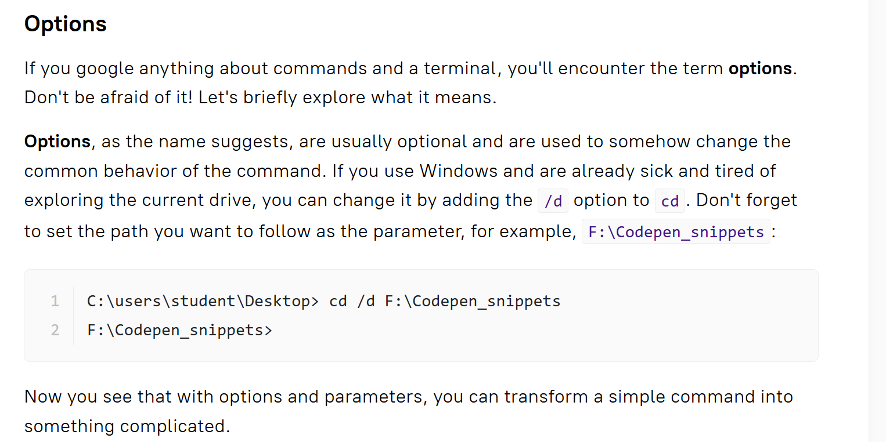
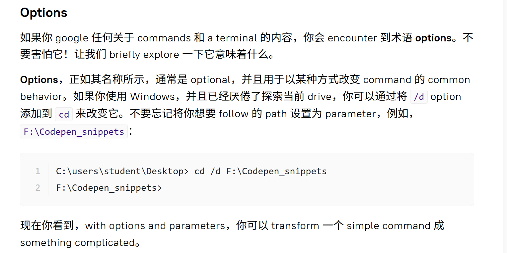
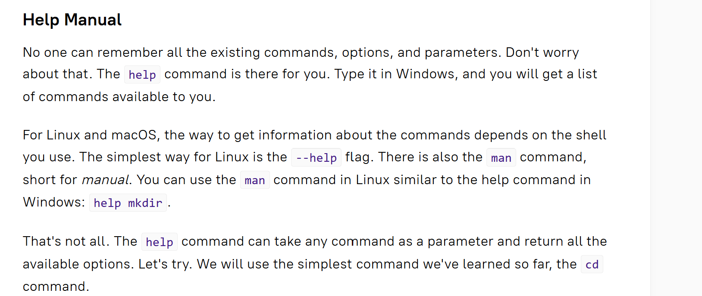
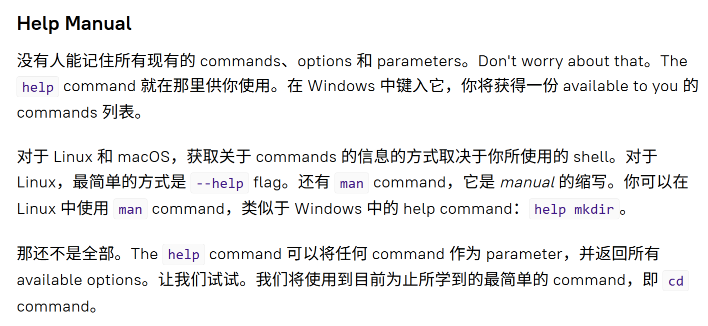
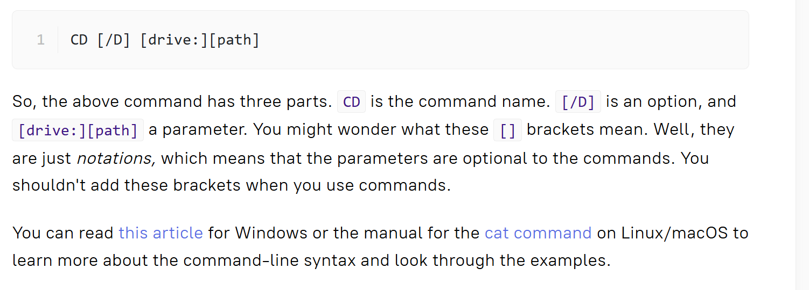
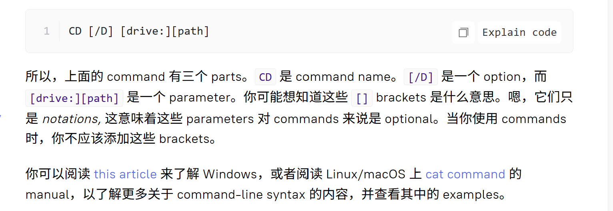
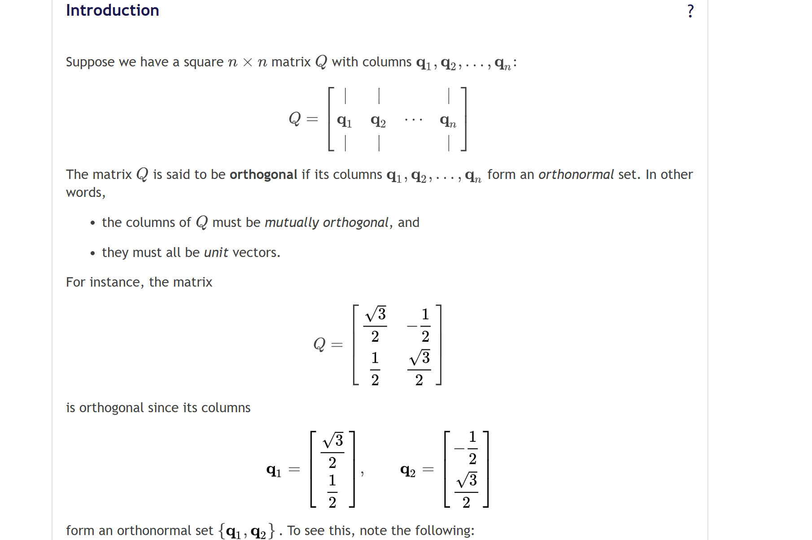
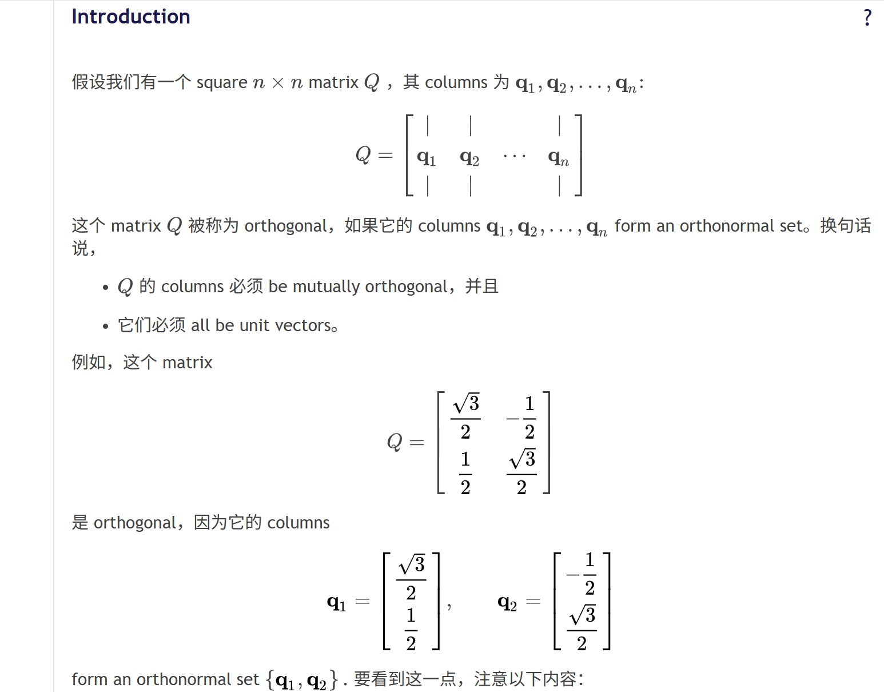
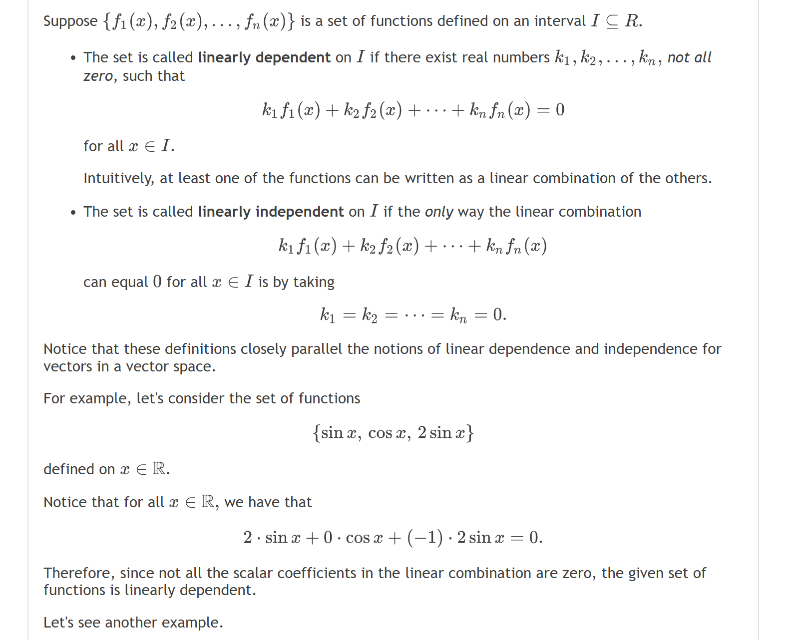
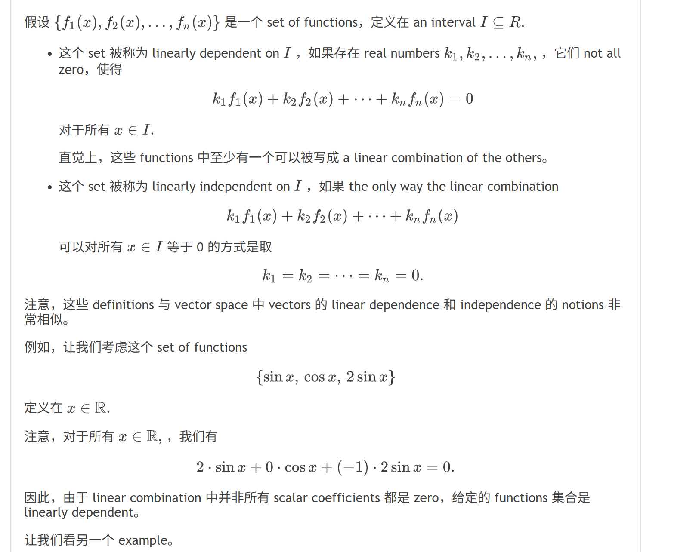
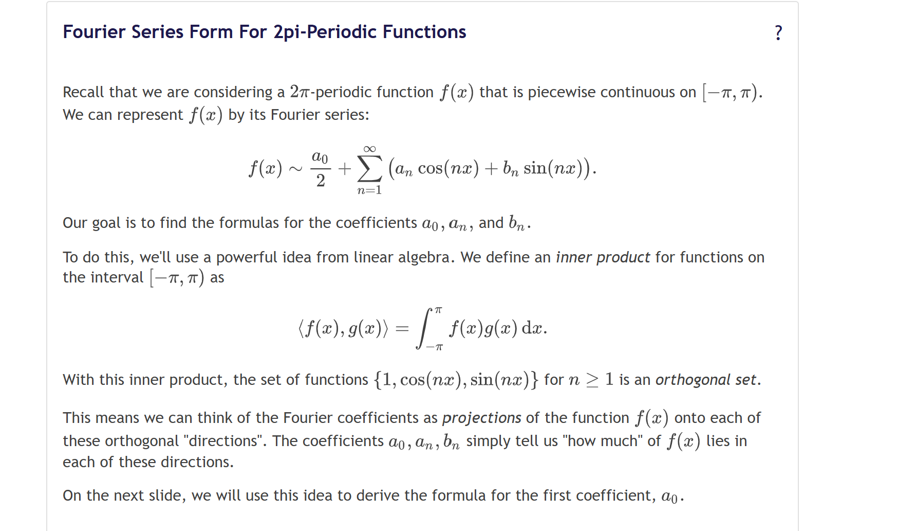
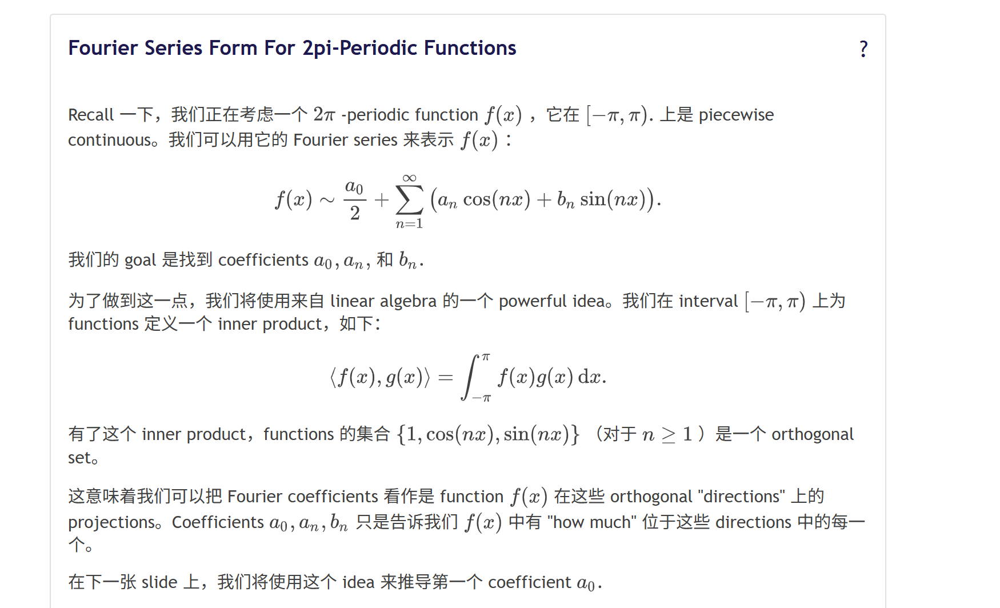
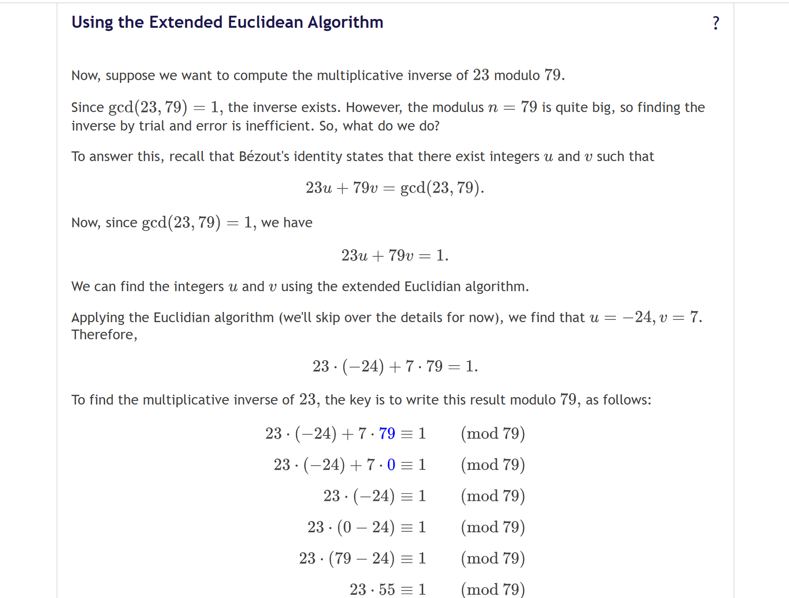
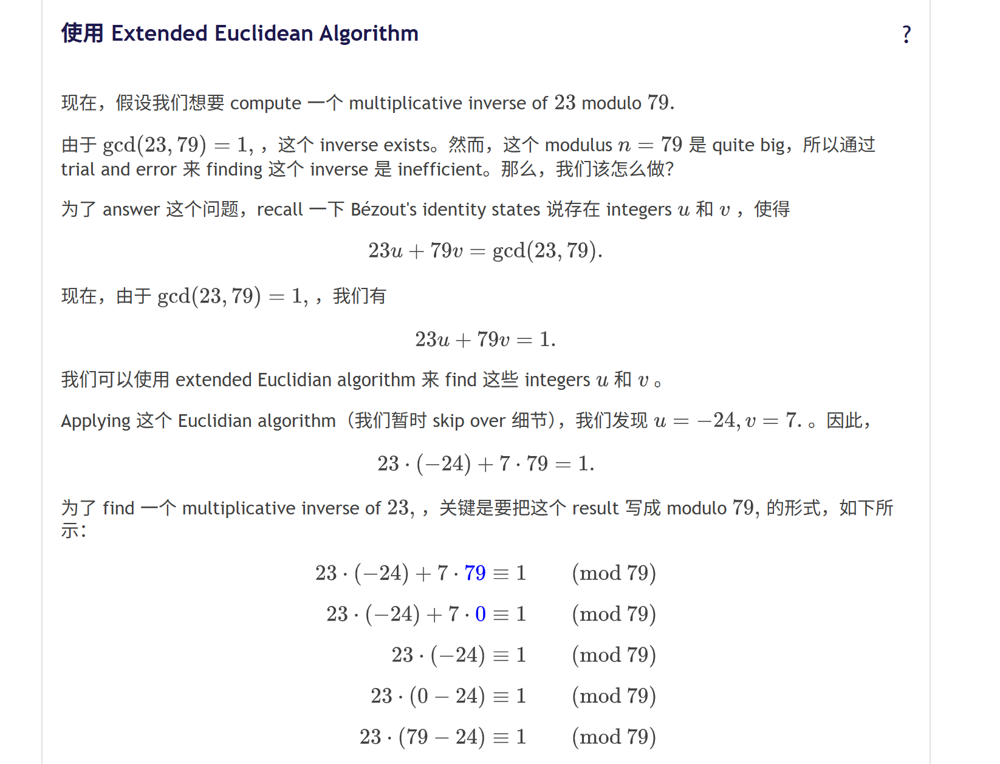
- 当然，很可能仍然看不懂，但这只是因为前置知识的缺失，如果按此范式从路径起始点学到相应节点，对这些术语不会陌生
- 消解排斥
- 可以参考情绪滤网假说
- 对于弱绑定的材料，其语言往往并不引人入胜，因此引起的排斥就更强
- 即使目的是达成更强的沉浸式语言学习，由于负反馈，效果也会大打折扣
- 提速
- 掌握专有名词
- 通过浏览我和agent的对话记录
- 总结我的开发需求与实现路径
- 事实上，目前并没有做到只保留专有名词，更多有英语特色的表述也被保留了，因为只翻译骨架已经足以让阅读速度提升到让我满意的程度了
- 我个人的实际使用一段时间之后的体验
- 明显感受到在低阻力的同时提升了英语阅读能力
- 对照我的需求
- 对全英的耐受力增强了
- 我下面分享一下我的简单配置方案
- 如何配置
- 工具
- 任何一种支持调用LLM的浏览器翻译插件
- 一个LLM api
- 设置浏览器插件
- 完成浏览器翻译插件内的api配置
- 采用文末附件的提示词
- 建议将设置调整为仅显示译文，不需要切为双语对照模式
- 这是由我们的动机所决定的。
- 这部分是从英文翻译成中文的组成部分，我们本就不关心它的英文原文是什么样的。
- 其他疑惑可参考 关于工具分享的配置环节
- 若干实际使用场景
- lecture+practice
- 在读lecture时开启翻译
- 在practice时直接阅读原文
- 大量同一 topic 的词汇已在 lecture 中习得，相对熟悉
- 专业术语之外的内容相对固化，因此不占据注意力
- Which of the following statements are true?
- 和LLM的交流
- 个性化词库
- 对语感造成的破坏？
- 目前主观感觉没有
- 这种原材料输入范式甚至可能培养更好的语感
- 相对而言，语言表述中不良或不够优秀的内容，大多来自半英半中的翻译范式
- 从这类文本中主要习得单词，但并不从中习得语言习惯和相关句法
- 语言习惯和句法需要从专业文学类或具有一定文学性质的文本中汲取
- 从训练语料角度看，是更优的
- 防止因为而无意识染上LLM风格
- 搭配其他工具使用
- 汇总一下之前用agent辅助写作的经历
- 配置一个工作流
- 理论背景，严格化
- 杂谈
- 模式识别
- 欠拟合
- 词汇量匮乏和语法隐性学习案例积累太少
- 句法分析和词源分析理论补足短板
- 模式识别需要与系统分析结合
- 过拟合
- 过度强调口音
- 俚语无意义
- 俚语需要特定语境，不应视为“地道”的通用表达
- 本身就透露着优越感和傲慢
- 如何确保可理解性输入的效率
- 逻辑推导
- 基本知识
- 语言基本结构
- 基本工具